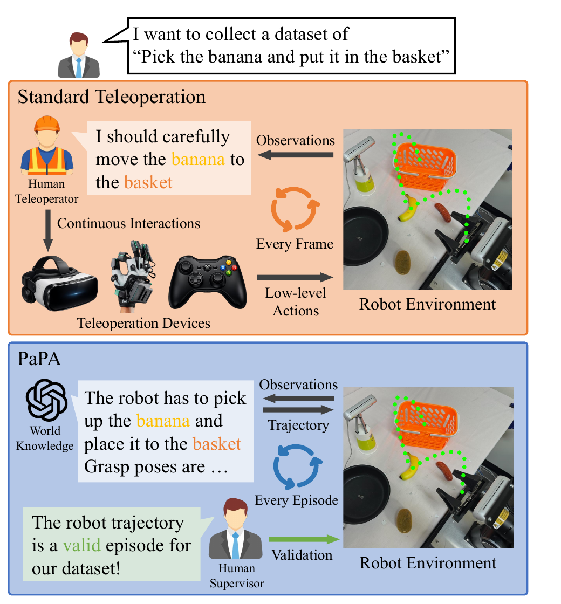
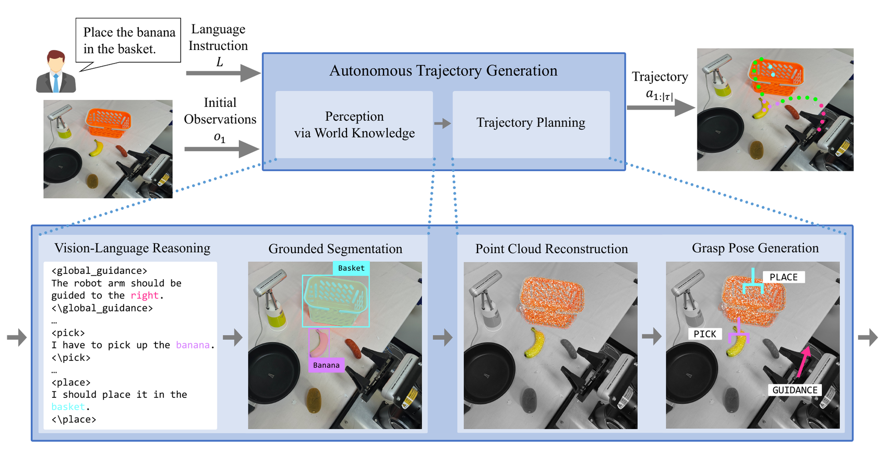
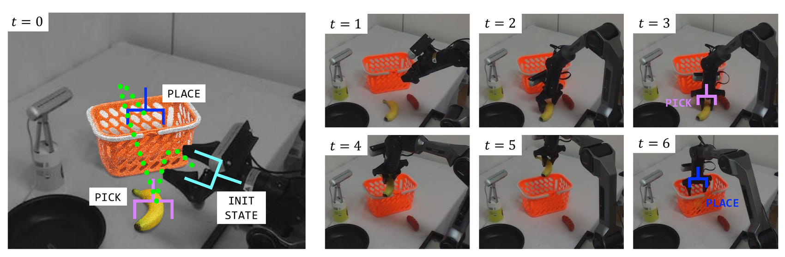
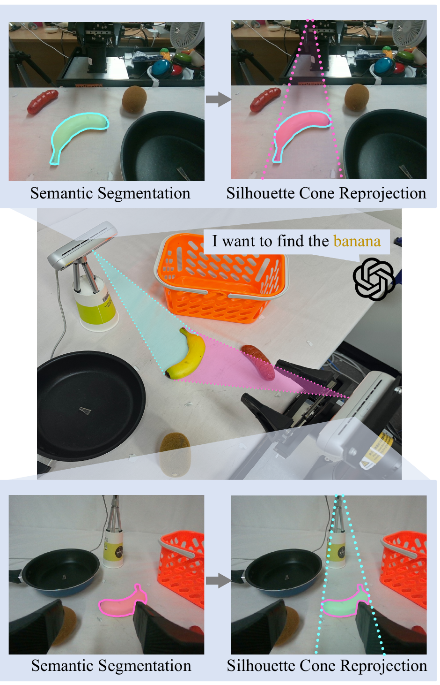
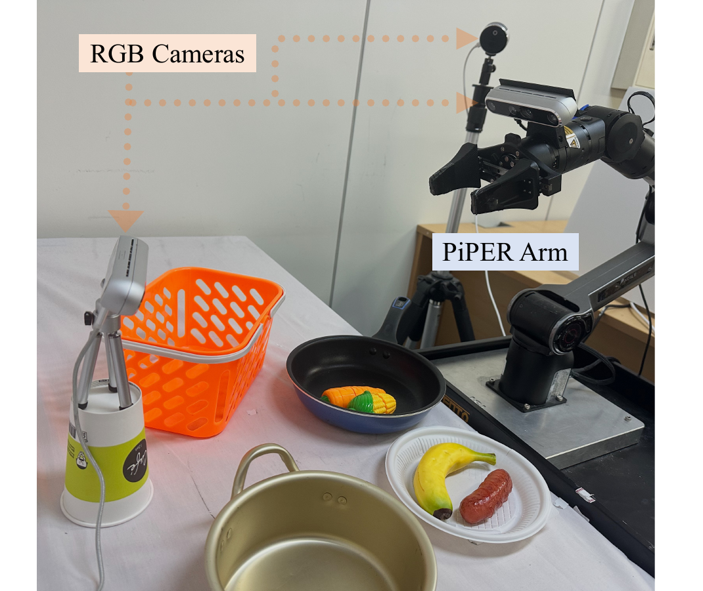
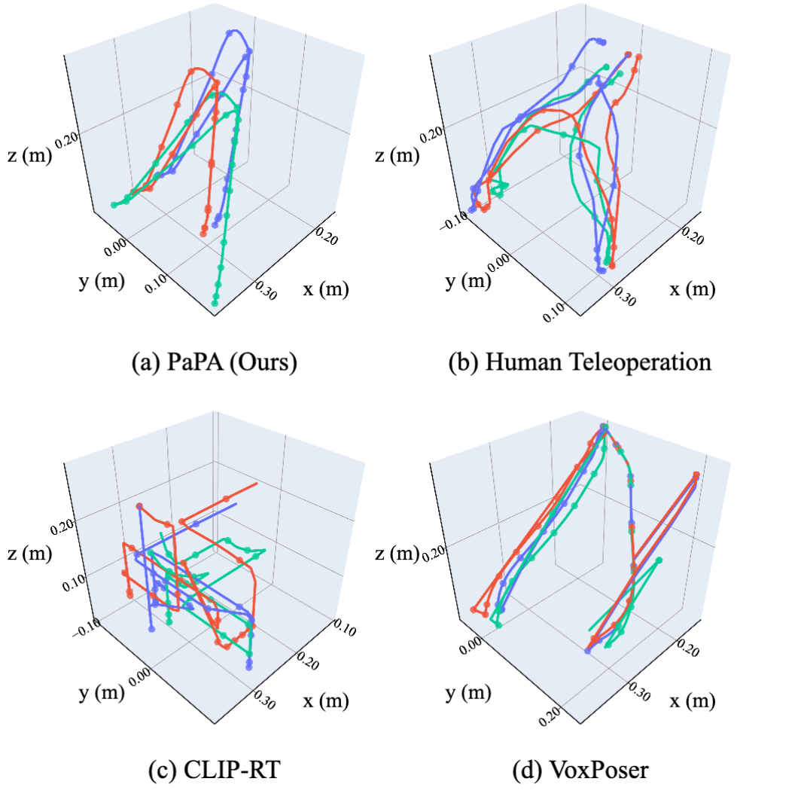
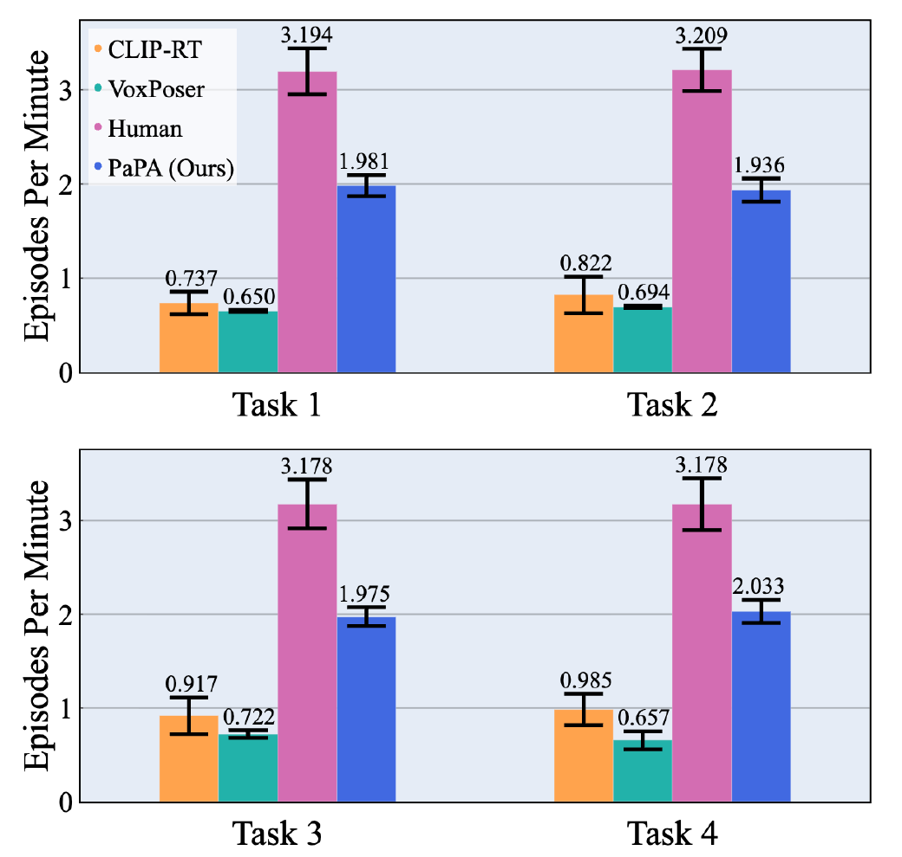

Towards Scaling Robotic Manipulation:
Leveraging World Knowledge as Automated Teleoperator
Seoul National University
†Corresponding author
The scalability of robot learning is significantly hindered by the cost of collecting real-world manipulation data. Despite recent progress in imitation learning, existing datasets are still predominantly acquired through expert teleoperation, which requires continuous low-level human control, specialized hardware, and carefully calibrated environments. This labor-intensive paradigm severely limits data throughput, generalizability, and long-term scalability.
We propose PaPA: Pick-and-Place Anything, a scalable robotic data collection framework for real-world manipulation that addresses this bottleneck through autonomous trajectory generation with minimal human supervision. PaPA leverages world knowledge encoded in vision-language models to ground open-vocabulary language instructions into explicit geometric representations, enabling the autonomous generation of robot-executable manipulation trajectories. This approach reduces human supervision to lightweight post-hoc binary verification, eliminating the need for continuous teleoperation.
Through extensive real-world experiments, we demonstrate that datasets collected by PaPA match the quality of expert teleoperation for imitation learning, achieving a policy success rate of 97.5%, while maintaining an efficient data collection rate of approximately two episodes per minute.
These results show that high-quality robotic manipulation data can be acquired at scale without continuous expert supervision, positioning PaPA as a practical and effective alternative to teleoperation-centric data collection. More broadly, PaPA demonstrates how world knowledge can be systematically transformed into scalable real-world robotic data, offering a concrete step toward data-driven robot learning at scale.

Real-world data collection with PaPA, including the cyclic collection pipeline: the robot perceives, plans, executes, and a supervisor only answers success or failure.
Given a language instruction L and initial multi-view observations o1, PaPA autonomously generates a robot-executable pick-and-place trajectory. The pipeline decouples high-level semantic reasoning from low-level geometric planning, so that neither stage needs task-specific supervision.

A zero-shot VLM (InternVL3-8B) reads the instruction and the images, and returns two things: global guidance — a preferred approach direction for the manipulator — and concise textual descriptors for the object to grasp and the placement region. Grounded-SAM then turns those descriptors into per-view semantic masks. Because the semantics come from an open-vocabulary model, implicit instructions such as “buying yellow fruits” resolve against the current scene.
The 2D masks are back-projected into silhouette cones and intersected across calibrated cameras, yielding an object point cloud under the visual-hull formulation. A PCA-based grasp estimator recovers the object's principal axes, giving a pick pose and a place pose. Interpolating init → pick → place produces a continuous trajectory, filtered for kinematic feasibility and smoothness.
The trajectory is executed while multi-view observations and actions are recorded. A human supervisor provides a single binary success label per episode — not per frame. Successful rollouts enter the dataset; failures, typically grasp slippage or collisions, are discarded. Human effort drops to 1.16 interventions per episode.


All experiments run on real hardware — no simulation, no sim-to-real transfer.

A 6-DoF AgileX PiPER arm with a two-finger gripper, paired with three RGB cameras — one wrist-mounted and two fixed workspace cameras (Intel RealSense D455 and L515). Extrinsics are calibrated with AprilTag-based methods and standard hand–eye calibration, aligning visual observations with robot kinematics for accurate 3D reconstruction.
Instructions follow a pick-and-place structure, “Pick A and place it into B”, with A ∈ {banana, sausage, corn, carrot} and B ∈ {plate, basket, pan, pot}. Four tasks are instantiated: Task 1 (banana, plate), Task 2 (sausage, basket), Task 3 (corn, pan), Task 4 (carrot, pot). Each task collects 20 successful demonstrations for training.
Human teleoperation (leader–follower arms with identical embodiment), CLIP-RT (language-based teleoperation, where a human issues iterative high-level instructions), and VoxPoser (LLM-generated 3D value maps guiding trajectory optimization).
PaPA is evaluated along four axes: downstream policy success, trajectory quality, collection efficiency, and human effort.
| Data collection method | Behavior cloning task success | Average | |||
|---|---|---|---|---|---|
| Task 1 | Task 2 | Task 3 | Task 4 | ||
| Human Teleoperation | 10 / 10 | 9 / 10 | 9 / 10 | 10 / 10 | 9.75 / 10 |
| CLIP-RT | 0 / 10 | 0 / 10 | 0 / 10 | 0 / 10 | 0.00 / 10 |
| VoxPoser | 3 / 10 | 1 / 10 | 3 / 10 | 1 / 10 | 2.00 / 10 |
| PaPA (ours) | 10 / 10 | 9 / 10 | 10 / 10 | 9 / 10 | 9.75 / 10 |
Policies trained on PaPA data reach 9.75 / 10 average success — identical to expert human teleoperation — while CLIP-RT and VoxPoser data are insufficient for effective imitation learning.
| Data collection method | Fréchet distance (cm) | DTW (cm) | Jerkiness (cm/s³) |
|---|---|---|---|
| Human Teleoperation | – | – | 38.0 ± 3.7 |
| CLIP-RT | 14.6 ± 3.0 | 4.5 ± 0.8 | 90.7 ± 9.1 |
| VoxPoser | 20.9 ± 0.7 | 5.4 ± 0.1 | 76.0 ± 1.2 |
| PaPA (ours) | 9.2 ± 1.1 | 2.9 ± 0.4 | 9.7 ± 0.6 |
PaPA trajectories are the closest to human demonstrations and the smoothest — jerkiness is roughly 4× lower than human teleoperation itself.


PaPA sustains 1.9–2.1 episodes per minute across all tasks. Human teleoperation is faster in raw throughput (3.1–3.3 episodes/min) but requires an expert on the loop the entire time, so it cannot run unattended. CLIP-RT (0.7–0.9) and VoxPoser (0.6–0.7) are substantially slower: CLIP-RT pays interaction overhead for every incremental language command, and VoxPoser repeats perception and planning cycles within a single rollout.
PaPA restricts vision-language reasoning to a single perception step per episode and generates the full trajectory with lightweight geometric planning — which is what keeps the rate stable.
| Method | Task 1 | Task 2 | Task 3 | Task 4 |
|---|---|---|---|---|
| VoxPoser | 74.1% | 80.0% | 50.0% | 54.1% |
| PaPA (ours) | 90.9% | 80.0% | 90.9% | 83.3% |
Physical effort is measured as direct human interactions per episode; cognitive effort uses a PASAT-style dual-task paradigm (correct auditory responses per second — higher means more spare cognitive capacity), and perceived workload uses NASA-TLX.
| Method | Human interactions / episode | PASAT correct responses / s |
|---|---|---|
| Human Teleoperation | continuous low-level control | 0.28 |
| CLIP-RT | 36.61 language instructions | 0.17 |
| VoxPoser | 1.61 post-hoc verifications | 0.30 |
| PaPA (ours) | 1.16 post-hoc verifications | 0.33 |
PaPA imposes the lowest mental workload of all four methods on NASA-TLX as well, followed by VoxPoser, human teleoperation, and CLIP-RT.
| Variant | Task success | Fréchet distance (cm) | DTW (cm) |
|---|---|---|---|
| w/o global guidance | 3 / 10 | 10.5 ± 2.0 | 3.2 ± 0.2 |
| w/o human supervision | 8 / 10 | 9.6 ± 0.5 | 3.1 ± 0.1 |
| PaPA (ours) | 10 / 10 | 9.2 ± 1.1 | 2.9 ± 0.4 |
Removing global guidance collapses success from 10/10 to 3/10: without a semantically consistent approach direction, trajectories lose the motion diversity that imitation learning needs to generalize. Dropping the binary success label (training on 18 successes + 2 failures out of 20 episodes) costs 2 points of success and introduces oscillatory, corrective motions.
In the supplementary material, PaPA is evaluated on four unseen object–container pairings — Task 5 (banana, pan), Task 6 (sausage, pot), Task 7 (corn, basket), Task 8 (carrot, plate) — reaching 85% average success versus 92.5% for human teleoperation. Training ACT instead of Diffusion Policy on the same datasets also keeps PaPA at or above the human-teleoperation baseline, indicating the data quality is not tied to one imitation learning architecture.
PaPA targets pick-and-place, which covers a large portion of everyday manipulation but not all of it. Extending the framework to deformable or dexterous tasks such as cloth folding requires tighter integration of grounded scene perception and planning — richer grasp and contact modeling, and task-aware motion primitives — which is the direction of our future work.